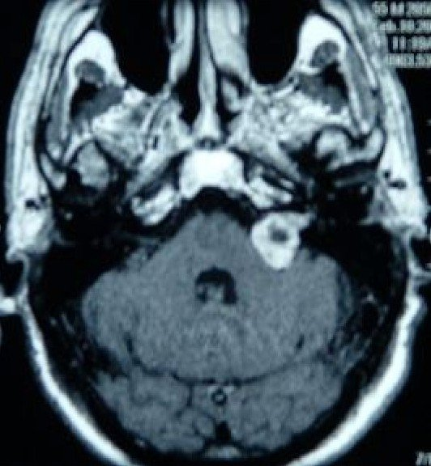
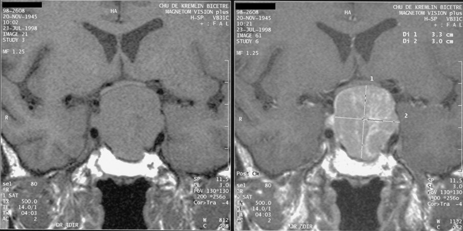
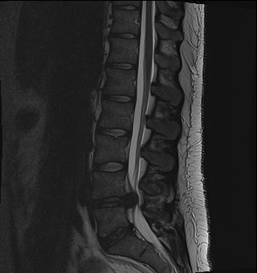
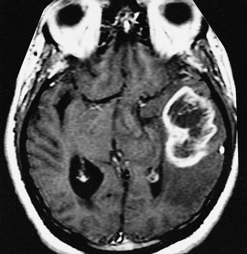
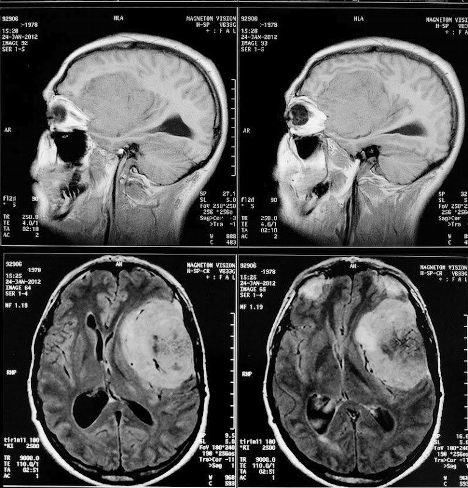
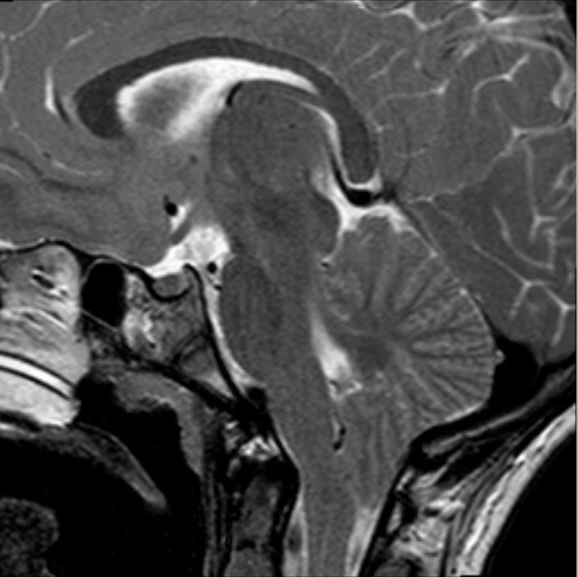
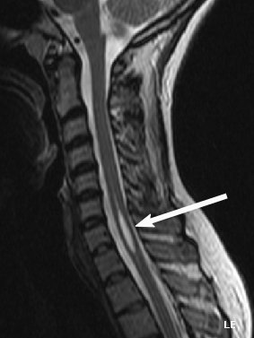
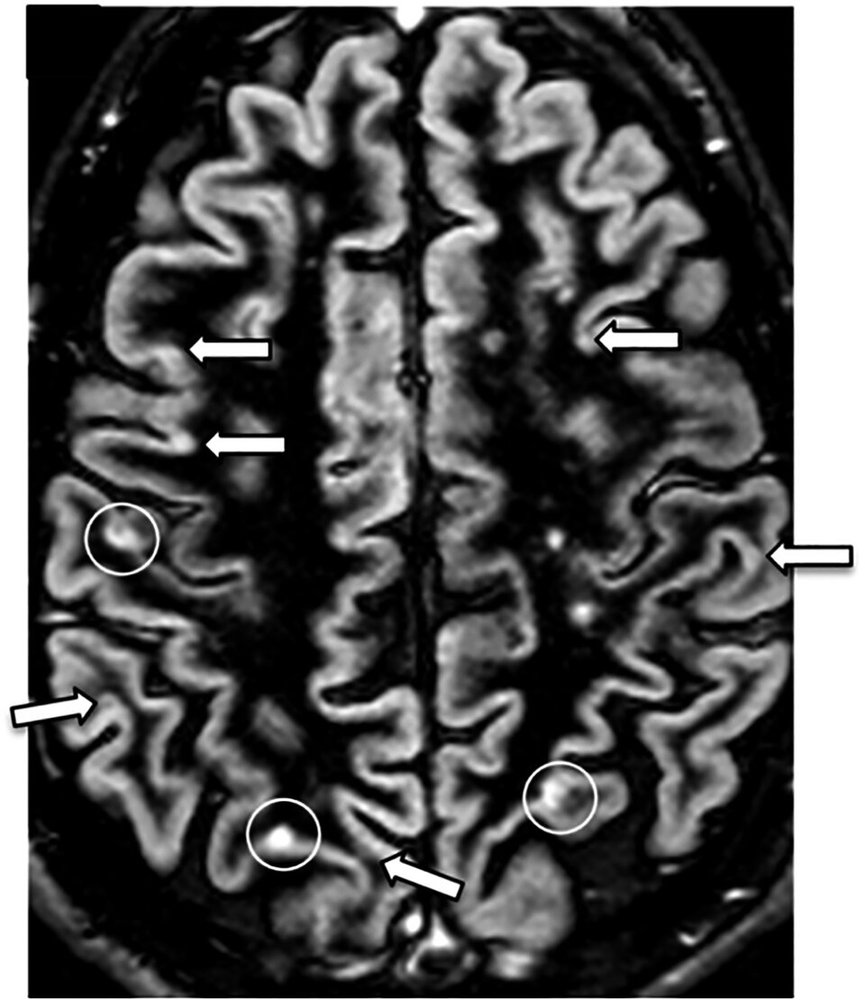
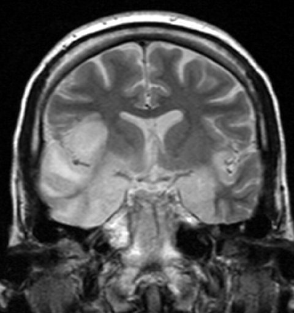
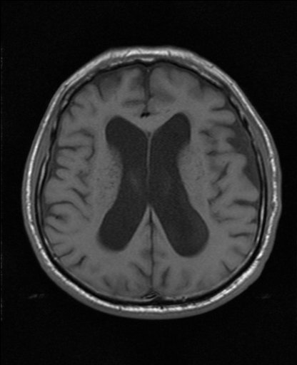

MRI Quiz: Practise Reading Real MRI Scans
Ten real MRI scans to read: tumours, inflammation and structural problems in the brain and spine. Read the short story, look at the scan, pick a diagnosis, and the answer explains what you should have spotted.
Question 1 of 10 · Brain
A 51-year-old has slowly worsening hearing and ringing (tinnitus) in her left ear.
What does this contrast-enhanced MRI of the brain show?

Image: Collins SP et al., Radiation Oncology 2007 · CC BY 2.0 · Wikimedia Commons. - Glioblastoma
- Vestibular schwannoma (acoustic neuroma)
- Meningioma of the falx
- Normal MRI
Show answer
Answer: Vestibular schwannoma (acoustic neuroma). A bright, enhancing mass sits at the left cerebellopontine angle (right of the image), right next to the internal auditory canal. It grows from the vestibular nerve, so one-sided hearing loss and tinnitus usually come first. Tip: Unexplained one-sided (asymmetrical) sensorineural hearing loss or tinnitus warrants an MRI of the internal auditory canals. Schwannomas on both sides mean neurofibromatosis type 2. Image source: Acoustic schwannoma by Collins SP et al., Radiation Oncology 2007.
Question 2 of 10 · Brain
A 45-year-old has headaches, his rings no longer fit, and he keeps bumping into door frames.
What does this coronal MRI of the pituitary show?

Image: Philippe Chanson and Sylvie Salenave · CC BY 2.0 · Wikimedia Commons. - Craniopharyngioma
- Normal pituitary gland
- Pituitary macroadenoma
- Meningioma
Show answer
Answer: Pituitary macroadenoma. A large mass (over 10 mm) grows up out of the pituitary fossa and presses on the optic chiasm above it. Pressure on the crossing fibres of the chiasm takes out the outer half of vision in both eyes (bitemporal hemianopia). Tip: Growing hands and feet point to growth hormone excess (acromegaly). Check visual fields and the pituitary hormones, including IGF-1, prolactin, cortisol and thyroid tests. Image source: Acromegaly pituitary macroadenoma by Philippe Chanson and Sylvie Salenave.
Question 3 of 10 · Spine
A 38-year-old has low back pain shooting down the back of his leg to below the knee after lifting a heavy box.
What does this sagittal T2 MRI of the lumbar spine show?

Image: Jay Moore · CC0 · Wikimedia Commons. - Disc herniation (prolapse) at L4–L5
- Spondylolisthesis
- Spinal stenosis from facet joint arthritis
- Vertebral fracture
Show answer
Answer: Disc herniation (prolapse) at L4–L5. The disc between L4 and L5 bulges well backwards into the spinal canal, narrowing the space for the nerve roots. The discs above it look normal. Tip: Most sciatica settles within 6 to 12 weeks without surgery. Red flags (saddle numbness, new bladder or bowel trouble, symptoms in both legs) need an urgent MRI for cauda equina syndrome. Image source: Severe herniation of L4-L5 disc by Jay Moore.
Question 4 of 10 · Brain
A 62-year-old has six weeks of worsening headaches and new trouble finding words.
What does this contrast-enhanced MRI of the brain show?

Image: Armed Forces Institute of Pathology · Public domain · Wikimedia Commons. - Meningioma
- Brain abscess
- Ischaemic stroke
- Glioblastoma
Show answer
Answer: Glioblastoma. An irregular mass with a thick ring of enhancement around a dark, dead (necrotic) centre sits in the left temporal lobe (right of the image), with swelling around it. A thick, irregular ring in an older adult is typical of glioblastoma. Tip: Ring-enhancing lesions have a short list: metastasis, abscess, glioblastoma, resolving bleed or infarct, demyelination and radiation necrosis. Diffusion MRI helps: pus in an abscess restricts diffusion. Image source: AFIP-00405558-Glioblastoma-Radiology by Armed Forces Institute of Pathology.
Question 5 of 10 · Brain
A 58-year-old has a year of slowly worsening headaches, and her family says her personality has changed.
What does this MRI of the brain show?

Image: Всеволод Лучанский (vvray) · CC BY-SA 3.0 · Wikimedia Commons. - Vestibular schwannoma
- Glioblastoma
- Subdural haematoma
- Meningioma
Show answer
Answer: Meningioma. A large, well-defined mass sits against the lining of the brain (outside the brain tissue) in the left frontotemporal region, pushing the brain across rather than growing out of it. Tip: Meningiomas are the commonest primary brain tumour and are mostly benign and slow-growing. Many are found by chance. Clues: a broad base on the dura and a ‘dural tail’ of enhancement. Image source: Meningioma-MRT by Всеволод Лучанский (vvray).
Question 6 of 10 · Brain
A 13-year-old has headaches at the back of her head that get worse when she coughs, laughs or strains.
What does this sagittal T2 MRI show?

Image: Hellerhoff · CC BY-SA 3.0 · Wikimedia Commons. - Chiari I malformation
- Normal MRI
- Medulloblastoma
- Hydrocephalus
Show answer
Answer: Chiari I malformation. The lowest parts of the cerebellum (the tonsils) sit below the opening at the base of the skull (the foramen magnum), crowding the space around the brainstem. More than 5 mm below is the usual cut-off. Tip: Headache triggered by coughing or straining is the classic symptom. Image the whole spine too: Chiari I often comes with a fluid cavity (syrinx) in the spinal cord. Image source: Chiari-1-Malformation 13W - MR T2 sagittal - 001 by Hellerhoff.
Question 7 of 10 · Spine
A 30-year-old has burns on his hands that he didn’t feel, and numbness across his shoulders in a cape-like pattern.
What does this sagittal T2 MRI of the neck show (arrow)?

Image: Cyborg Ninja at English Wikipedia (derivative: SUM1) · CC BY 4.0 · Wikimedia Commons. - Disc herniation
- Spinal cord tumour
- Syringomyelia (a syrinx in the spinal cord)
- Multiple sclerosis plaque
Show answer
Answer: Syringomyelia (a syrinx in the spinal cord). A fluid-filled cavity, bright on T2 (arrowed), runs down the centre of the cervical spinal cord. It damages the crossing pain and temperature fibres first, so pain and heat go while light touch is spared. Tip: ‘Cape-like’ loss of pain and temperature with preserved touch is the classic pattern. Look at the top of the scan for a Chiari I malformation. Image source: Syringomyelia (with arrow) by Cyborg Ninja at English Wikipedia (derivative: SUM1).
Question 8 of 10 · Brain
A 29-year-old woman had painful, blurred vision in one eye last year. Now she has tingling and numbness in both legs.
What is the most likely diagnosis on this MRI (arrows and circles)?

Image: Favaretto A et al. · CC BY 4.0 · Wikimedia Commons. - Small vessel ischaemic disease
- Multiple sclerosis
- Migraine-related white matter spots
- Brain metastases
Show answer
Answer: Multiple sclerosis. Several bright lesions (arrowed and circled) are scattered through the brain, including in and next to the cortex. Lesions in different places at different times, with optic neuritis then a new episode, fit multiple sclerosis. Tip: MS lesions favour four places: around the ventricles, in or next to the cortex, below the tentorium and in the spinal cord. Ovoid lesions pointing away from the ventricles are ‘Dawson’s fingers’. Image source: Axial DIR MRI of a brain with multiple sclerosis lesions by Favaretto A et al..
Question 9 of 10 · Brain
A 33-year-old woman has three days of fever, confusion and agitation, and has stopped speaking.
What does this coronal T2 MRI show?

Image: Laughlin Dawes · CC BY 3.0 · Wikimedia Commons. - Multiple sclerosis
- Ischaemic stroke
- Glioblastoma
- Herpes simplex encephalitis
Show answer
Answer: Herpes simplex encephalitis. The temporal lobes are bright and swollen, one much more than the other. Herpes simplex virus type 1 has a strong preference for the temporal lobes and insula. Tip: Start IV aciclovir as soon as you suspect it. Don’t wait for the MRI or the lumbar puncture result: delay worsens the outcome. Image source: Hsv encephalitis by Laughlin Dawes.
Question 10 of 10 · Brain
A 74-year-old has a shuffling, ‘magnetic’ walk, urinary urgency and slowly worsening memory.
What does this MRI of the brain show?

Image: Nevit Dilmen · CC BY-SA 3.0 · Wikimedia Commons. - Normal ageing
- Normal pressure hydrocephalus
- Parkinson’s disease
- Alzheimer’s disease
Show answer
Answer: Normal pressure hydrocephalus. The ventricles are much bigger than you’d expect for the size of the grooves (sulci) on the brain surface. Ventricles out of proportion to atrophy, plus the triad of walking trouble, incontinence and confusion, suggest normal pressure hydrocephalus. Tip: ‘Wet, wobbly and wacky.’ Walking is the symptom most likely to improve with a shunt, and a large-volume lumbar puncture (tap test) can help predict who will benefit. Image source: NPH MRI 088 by Nevit Dilmen.
Want more? Try the CT scan quiz and X-ray quiz, or play a new X-ray every day in Opacitis, our daily X-ray puzzle: one film, one story, six diagnoses. Past films are in the Opacitis archive, and there are more games in Medical games.
About this quiz
- 10 questions: 8 brain, 2 spine.
- Core findings: the MRI diagnoses GPs, students and juniors meet most.
- Real images: anonymised MRI scans under free licences, credited under each image. Patient stories are fictional.
- Free, no sign-up: your best score is saved on your device only.
Common questions
What’s the difference between T1 and T2 MRI?
On T1 images fluid (CSF) is dark and fat is bright, so anatomy looks crisp. On T2 images fluid is bright, so swelling, inflammation and cysts stand out. A handy memory aid: on T2, water is white (‘World War Two’). FLAIR is a T2 image with the CSF signal switched off, so lesions next to the ventricles are easier to see.
Why is contrast (gadolinium) used in MRI?
Gadolinium shows where the blood–brain barrier is broken or where tissue has a rich blood supply, so tumours, abscesses, active MS plaques and infection light up. It isn’t needed for many scans, such as most disc problems.
When is MRI better than CT?
MRI shows soft tissue in much more detail: the brain, spinal cord, discs, ligaments, muscles and the pituitary. CT is faster and better for acute bleeding in the head, fractures and lung problems, and is easier for unwell patients.
Who can’t have an MRI?
MRI uses a powerful magnet, so some pacemakers, cochlear implants, older aneurysm clips and metal fragments in the eye can be dangerous. Many modern devices are ‘MRI conditional’. Always check with the radiology department beforehand.
Who is this MRI quiz for?
Medical, nursing, physiotherapy and radiography students, junior doctors and GPs brushing up on common MRI findings, and anyone curious about what MRI scans show. Every answer comes with the key finding and a practical tip.
Are these real MRI scans?
Yes. They’re real, anonymised MRI images shared under free licences or in the public domain on Wikimedia Commons, credited under each image. The patient stories are fictional and written to match each scan.
More medical quizzes
Image credits (contains answers)
- Acoustic schwannoma by Collins SP et al., Radiation Oncology 2007 · CC BY 2.0 · via Wikimedia Commons.
- Acromegaly pituitary macroadenoma by Philippe Chanson and Sylvie Salenave · CC BY 2.0 · via Wikimedia Commons.
- Severe herniation of L4-L5 disc by Jay Moore · CC0 · via Wikimedia Commons.
- AFIP-00405558-Glioblastoma-Radiology by Armed Forces Institute of Pathology · Public domain · via Wikimedia Commons.
- Meningioma-MRT by Всеволод Лучанский (vvray) · CC BY-SA 3.0 · via Wikimedia Commons.
- Chiari-1-Malformation 13W - MR T2 sagittal - 001 by Hellerhoff · CC BY-SA 3.0 · via Wikimedia Commons.
- Syringomyelia (with arrow) by Cyborg Ninja at English Wikipedia (derivative: SUM1) · CC BY 4.0 · via Wikimedia Commons.
- Axial DIR MRI of a brain with multiple sclerosis lesions by Favaretto A et al. · CC BY 4.0 · via Wikimedia Commons.
- Hsv encephalitis by Laughlin Dawes · CC BY 3.0 · via Wikimedia Commons.
- NPH MRI 088 by Nevit Dilmen · CC BY-SA 3.0 · via Wikimedia Commons.